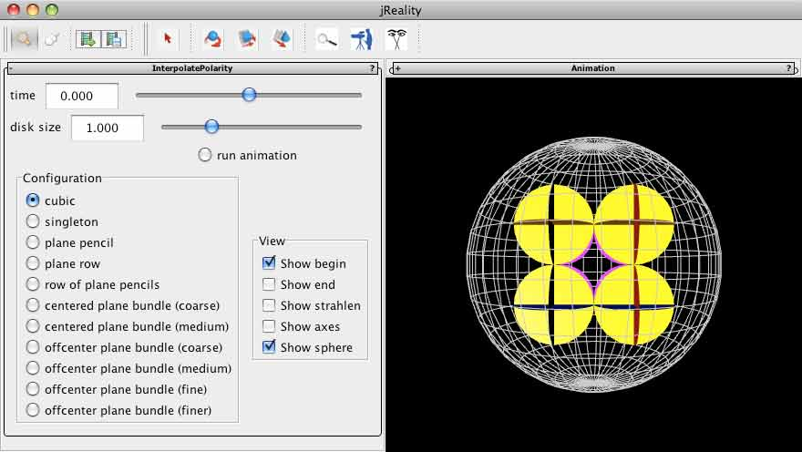

First-time users: For general introduction to the visualization tools involved, see this introduction.
A non-degenerate quadratic form gives an inner product on the points of projective space. This inner product can be used to define a metric on projective space (in any dimension). This inner product induces a polarity on the elements of projective space. A point is mapped to the plane (hyperplane) consisting of all points orthogonal to it (that is, points which have vanishing inner product with the given point).
Louis Locher-Ernst, in his book Geometrische Metamorphosen (Dornach, 1970) describes how one can continuously interpolate between a geometric configuration and its image configuration, under the polarity described above. The precondition for defining this interpolation is that the configuration consists of surface elements. A surface element is a pair (P, p) where P is a point and p is a plane incident with P. Then under the polarity Pi this pair is mapped to the pair (Pi(p), Pi(P)), another surface element. The point moves along the line which is polar to the joining line of P and Pi(p); the plane rotates around the line which is polar to the intersection line of p and Pi(P). If we let f stand for the interpolation map, then f(0) = (P,p), and f(1) = (Pi(p), Pi(P)). The important point, which I won't prove here, is that the intermediate stages f(t), 0<t<1, f(t) is a surface element. That is, the motion of the point and the rotation of the plane indicated here has the property that under the natural parametrization, incidence of point and plane is preserved.
The demonstation here uses the quadratic form (-,-,-,+) which gives rise to hyperbolic geometry. The wireframe sphere represents the points at infinity of hyperbolic space (points with vanishing norm); the interior is hyperbolic space; points outside can be considered as dual hyperbolic space (where planes are the constituent elements, not points).
There should be a panel visible to the left of the 3D graphics window labeled "InterpolatePolarity". If this is not present, select the menu item "Window->Left slot". The full window should appear as shown below. You can remove the panel using the same menu item. You can also drag the panel out of the window by dragging on the title bar.

The application allows the user to select a given configuration of surface elements. In this case, a cube represented by 24 surface elements 6 per vertex transforms to an octahedron with the 24 surface elements arranged 4 incident at each vertex of the octahedron. The other configurations are simpler: focusing on projective elements such as plane pencils and plane bundles.
Then, using the slider, he can animate the interpolation taking the configuration to its polar. Or, use the checkbox labeled "run animation" to run the interpolation back and forth without stopping.
Each surface element is represented by a disc, centered at the point and lying in the plane of the surface element. The size of all discs can be globally controlled from a slider on the control panel.
There are also a number of display options: